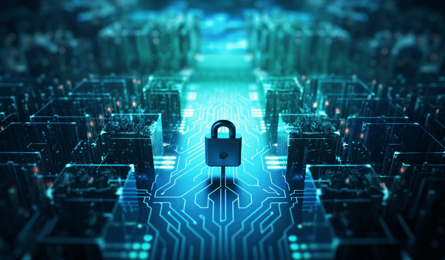

¿Qué es la ciberseguridad?
La ciberseguridad es la práctica de proteger equipos, redes, aplicaciones de software, sistemas críticos y datos de posibles amenazas digitales. Las organizaciones tienen la responsabilidad de proteger los datos para mantener la confianza del cliente y cumplir la normativa.

¿Para qué sirve?
La ciberseguridad tiene múltiples aplicaciones que van desde la protección de datos hasta el fortalecimiento de la resiliencia operativa. Sus principales funciones son:
Proteger la confidencialidad de los datos: acceso no autorizado a información sensible, como datos financieros o personales.
Garantizar la disponibilidad de sistemas:las interrupciones causadas por ataques como el ransomware o fallos técnicos.
Cumplir con normativas y estándares:Implementar estándares como la ISO 27001 asegura que las organizaciones cumplan con regulaciones globales de seguridad. Según Pirani, esta norma proporciona un marco sistemático para gestionar riesgos de seguridad y proteger la información de manera integral.
Promover la confianza en el entorno digitales:ce las relaciones con clientes y socios al garantizar un ecosistema seguro para transacciones y servicios.